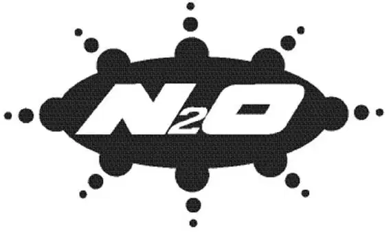

“Turn right to go left,” Lightning muttered later that afternoon as he pulled Bessie down the road. He was filthy and covered with cactus thorns. “Guess what? I tried it, and you know what? This crazy thing happened—I went right!”
“You keep talking to yourself, people’ll think you’re crazy,” Lizzie said.
“Thanks for the tip,” Lightning told the forgetful old car.
Lizzie glared at the race car. “I wasn’t talking to you!”
Meanwhile, Lightning’s gorgeous new road had inspired the townsfolk to spruce up their shops. Mater was using his cable to straighten his TOW MATER sign. Ramone was repainting a fence as Flo looked on, clearly impressed. Red was busy washing the leaning tower of tires.
“Che bellissimo!” Sally cried as she watched Luigi’s assistant, Guido, paint the tire store while Luigi cleaned the windows. “It looks great!” She was thrilled to see the townspeople taking pride in Radiator Springs. Actually, she thought, there’s only one car who still needs a makeover. … She looked over at the filthy race car, who was muttering to himself as he paved.
“While I’m stuck here paving this stinking road,” he griped, “Chick’s in California schmoozing Dinoco.” Lightning pulled harder, working out his anger. “My Dinoco. Whoa, whoa, whoa!” he said, stopping to straighten up. “Who’s touching me?”
“You have a slow leak,” Luigi explained as Guido checked the air in Lightning’s tires. Cactus prickles stuck out of the rubber like porcupinequills.
“Guido,” Luigi said, motioning to his assistant, who held a can of tire sealant, “he fix. You make-a such-a nice new road. You come to my shop. Luigi take-a good care of you—even though you not a Ferrari. You buy four tires, I give you a full-size spare absolutely free.” He smiled enthusiastically.
Lightning sighed. He was in a terrible mood. “Look,” he said irritably, “I get all my tires for free.” Don’t these people know anything about famous race cars? he wondered.
Just as Luigi drove off, Lightning was blasted with cold water. “Ohh!” he screamed. “Stop!”
The water stopped, and Lightning found himself facing Red. Sally was standing beside him.
“Ooh, Red,” Sally said, “you missed a spot. See it right there? Right on the hood? Right there.”
“No, no—” Lightning cried as Red blasted the remaining piece of cactus on his hood. “Ah … stop!” he sputtered. “Ah, that’s cold! Whoo! Help! Please! Stop!”
Red kept blasting water at Lightning until the cactus flew off.
“Thanks, Red,” Sally said.
“What was that for?” Lightning demanded, coughing and blinking.
“Do you want to stay at the Cozy Cone, or what?” Sally asked bluntly. “I mean, if you do, you gotta be clean.”
“What?” Lightning was really confused now. “I don’t get it—”
“Nothing,” Sally said, trying to sound as if it was no big deal. “I just thought I’d say thank you for doing a great job by letting you stay at the Cozy Cone.”
Lightning was shocked. “Wait, you’re being nice to me.”
“I mean, if you want to stay at the dirty impound, that’s fine,” Sally went on. “You know, I understand—you criminal types.”
“No, no, no, no—that’s okay.” Lightning looked in admiration at the motel in the distance. It was much nicer than the impound, that was for sure. “Yeah, the Cozy Cone.”
“Cone number one, if you want.” Sally drove off, accidentally running into a stack of orange cones. They tumbled all over. Embarrassed, she drove quickly into her motel office.
Just then, Mater appeared. He pulled up beside Lightning and began chattering away, “You know, I once knew this girl Doreen. Good-lookin’ girl. Looked just like a Jaguar, only she was a truck. You know, I used to crash into her just so I could spoke to her.” Mater grinned proudly.
“What are you talking about?” Lightning asked.
“I dunno,” Mater admitted. “Hey, I know somethin’ we can do tonight, ’cause I’m in charge of watchin’ ya.”
“No, Mater, I gotta finish this road and I have to get out of here.”
“Well, that’s all right, Mr. I-Can’t-Turn-on-Dirt.” Mater started to drive off. “You probably couldn’t handle it, anyway.”
“Whoa, whoa, easy now, Mater,” Lightning said indignantly. “You know who you’re talking to? This is Lightning McQueen. I can handle anything.”
